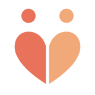

다정(多情) — 정이 많음. 저희는 그 마음을 그대로 센터의 이름으로 삼았습니다.
안녕하세요, 다정재가복지센터입니다. 어르신이 가장 편안한 공간인 '집'에서, 가장 다정한 손길로 돌봄을 받으실 수 있도록 준비하고 있는 재가노인복지시설입니다.
저희가 제공하는 서비스
간호사가 가정을 방문해 건강을 살피는 방문간호, 요양보호사가 일상생활을 돕는 방문요양, 목욕 설비를 갖춘 차량으로 찾아가는 방문목욕까지, 어르신 한 분 한 분의 상황에 맞는 돌봄을 제공합니다.
기본 정보
- 📍 위치: 경상남도 밀양시 밀성로2길 19 (내이동 606) 1층
- 🏢 시설 형태: 재가노인복지시설 (재가장기요양기관)
- 🗓 현재 단계: 설치신고 및 장기요양기관 지정 절차 진행 중
오시는 길
위 위성사진에 표시된 위치가 다정재가복지센터가 자리할 경상남도 밀양시 밀성로2길 19(내이동 606) 1층입니다.
대표자 소개
박미혜 (대표·시설장)
다정재가복지센터는 간호사 면허를 보유한 박미혜 대표가 설립을 준비하고 있습니다. 약 25년간 병원과 재가 돌봄 현장에서 간호사로 근무해 왔습니다. 종합병원에서 병동 간호사·수간호사로 근무한 경험에 더해, 방문간호 전문기관에서 어르신을 직접 찾아뵙고 돌보는 재가 현장 실무까지 두루 쌓았습니다.
이러한 현장 경험을 바탕으로, 다정재가복지센터에서도 어르신 한 분 한 분의 상태를 세심하게 살피고 가족처럼 섬기는 마음으로 센터를 운영하고자 합니다.
로고에 담은 의미
머리글에 있는 작은 로고는 서로 기대어 선 두 사람이 하트를 반씩 나눈 모습을 하고 있습니다. 어르신과 보호자, 그리고 저희 센터가 서로 기대고 의지하며 함께 걸어가는 모습을 담고 싶었습니다.
앞으로의 약속
- 어르신의 존엄과 일상을 먼저 생각하겠습니다.
- 작은 변화도 보호자님께 꼼꼼히 알려드리겠습니다.
- 센터 개설 과정과 운영 소식을 이 블로그에 투명하게 기록하겠습니다.
아직 문을 열기 전이지만, 준비하는 과정 하나하나를 이 블로그에 담아가려 합니다. 다정재가복지센터의 다음 이야기도 지켜봐 주세요.